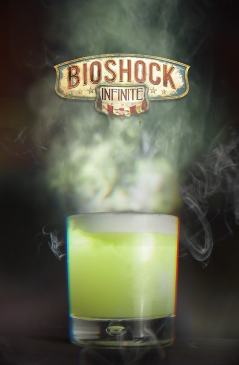

Possession

Possession (Bioshock Infinite cocktail)
“With POSSESSION, the free will of your enemies matters no more. Make your foes blindly fight and die for you.” -Fink Manufacturing advertisement
Drink created by James Dance of Loading as part of an official Bioshock Infinite series of drinks.
Ingredients
- 1 bunch of Basil
- ½ Lemon
- ½ Lime
- 25 ml Sugar Syrup
- 50 ml Tanqueray Gin
Absinthe Froth Recipe (serves 4)
- 1 Egg White
- 25 ml Sugar Syrup
- 25 ml Water
- 25 ml Absinthe
Steps
- Add Basil and lemon half into a cocktail shaker and muddle heavily
- Add a shot of sugar syrup to the mix
- Add in Tanqueray gin
- Fill to the top with iace and shake vigorously
- Strain any liquid out of the ingredients
- Serve in a rocks glass with fresh ice
- Add some Absinthe froth to top of the drink
- To make the froth, combine the ingredients in a blender and whisk until foam forms, skim some off and add to drink